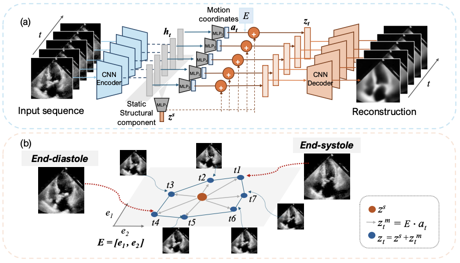
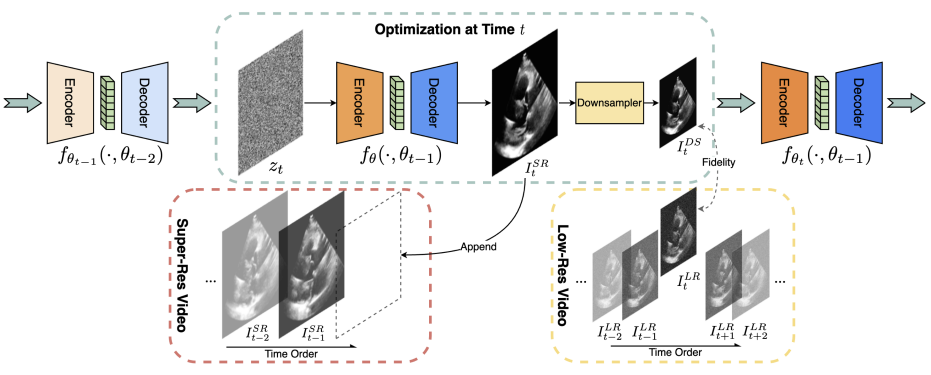
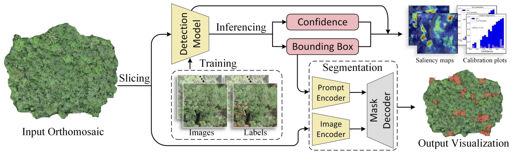
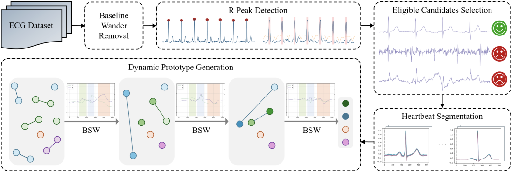
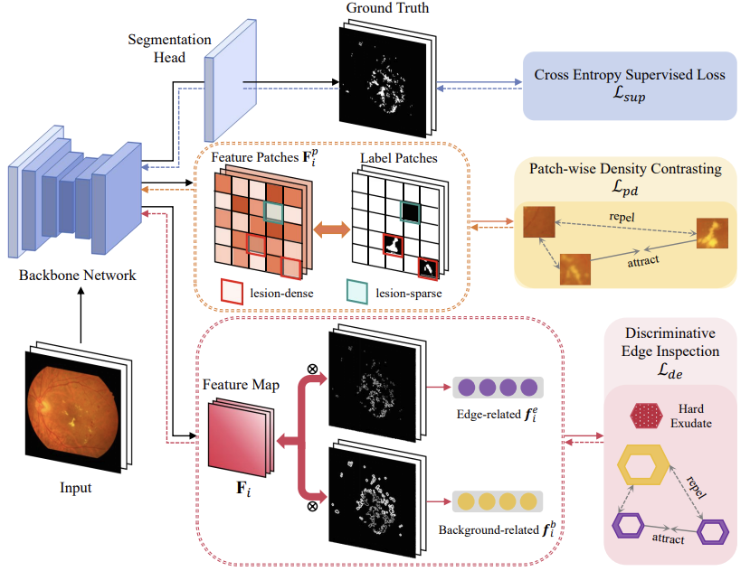
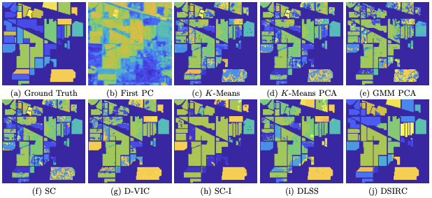

Conference Publications

"Latent Motion Profiling for Annotation-free Cardiac Phase Detection in Adult and Fetal Echocardiography Videos" MICCAI, 2025



"Blind Restoration of High-Resolution Ultrasound Video" MICCAI, 2025

"Detection and Geographic Localization of Natural Objects in the Wild: A Case Study on Palms" IJCAI, 2025



"Bilateral Signal Warping for Left Ventricular Hypertrophy Diagnosis" ISBI, 2025


"Optimized Hard Exudate Detection with Supervised Contrastive Learning" ISBI, 2024



"Unsupervised Spatial-spectral Hyperspectral Image Reconstruction and Clustering with Diffusion Geometry" WHISPERS, 2022


† indicates the first authorship, ‡ indicates the correspondence.